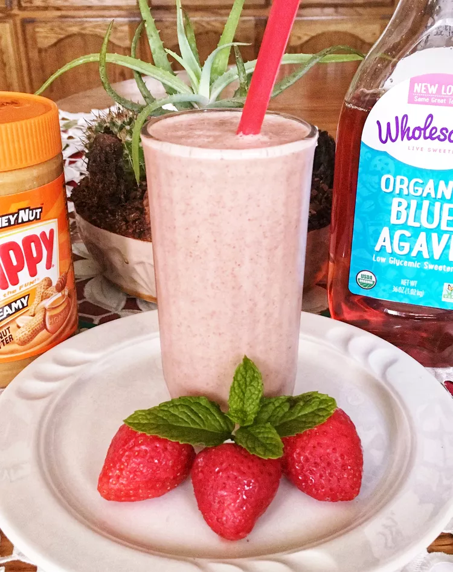

Peanut Butter and Fruit Smoothie

Peanut Butter and Fruit Recipe
This easy recipe takes no time at all to complete. The total time to prepare and serve is 5 minutes.
Ingredients
- 6 frozen strawberries, or more to taste
- ¾ cup milk
- 1 ½ tablespoons peanut butter
- 1 tablespoon blue agave nectar, or more to taste
- 1 tablespoon flax seeds
Steps
-
Combine strawberries, milk, peanut butter, blue agave, and flax seeds in a blender and blend until well combined.